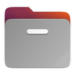
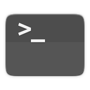
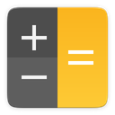
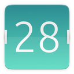
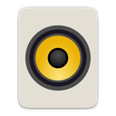

Nada tocando
Música
Qualquer player com MPRIS. Capa, faixa e controles, em pílula de vidro.
ATLAS é um dock para o GNOME com lente de ampliação, ambientes e widgets. Cada tema é uma cena inteira, e cada cena tem um mascote que mora nela.
Para GNOME Shell 46, em Wayland e em X11.
Um tema não é só uma cor. Define o material da doca, a borda, o jeito de marcar o app aberto, o efeito de fundo e o mascote residente.
Jogo aconchegante, desenhado quadro a quadro.
Vidro, papel, luz natural e chuva, com acabamento de objeto.
Neve, presentes e um Natal brasileiro de calor.
Só o dock, sem cenário.
Os temas com botão estão desenhados na página e trocam a cena do topo. Pixel e Clássico ainda não foram redesenhados para a vitrine.
O mascote fica na doca do tema atual e não sai de lá. Anda, descansa, dorme e reage ao que acontece. Escolha o que ele está fazendo.
Trabalho, Estudo, Lazer. Cada ambiente guarda seus apps e widgets e tem uma cor própria. Gire a roda do mouse sobre o dock ao lado.
Tiles desenhados com anéis, gráficos e ponteiros, nunca uma lista de texto. Um clique abre o painel.
Qualquer player com MPRIS. Capa, faixa e controles, em pílula de vidro.
Foco e pausas, com anel de progresso.
CPU e memória.
Tempo agora e previsão da cidade que você escolher.
Anel com a carga e o tempo restante; pisca quando está baixa.
Dia, semana, mês e ano.
Todos desenhados no mesmo vocabulário: anéis, gráficos e ponteiros.
A doca ao vivo fica fixa no topo e toda mudança aparece ali na hora. Escolha olhando, não lendo. Esta janela é um desenho e responde ao toque: troque o tema e o mascote, ligue um widget, arraste a lente.
A doca muda na prévia acima, na hora.
Em que borda da tela a doca fica.
Força 1,00 desliga a lente.
Como a doca se esconde e reage.
Cada um guarda os apps e os widgets de um momento do dia.



+
+
+Clique numa combinação para gravar outra.
Toque em um cartão para ligar ou desligar neste ambiente.
Moram na doca do tema atual e aparecem em horas, datas e eventos certos. Desligados, não gastam nada.
Testar mostra o mascote na prévia acima.
Cada distribuição e cada configuração do Linux muda alguma coisa, e não dá para garantir que tudo funcione em todas. Por isso o ATLAS mira um ambiente e funciona bem nele.
Medido por dentro, em porcentagem de um núcleo, com duas telas.